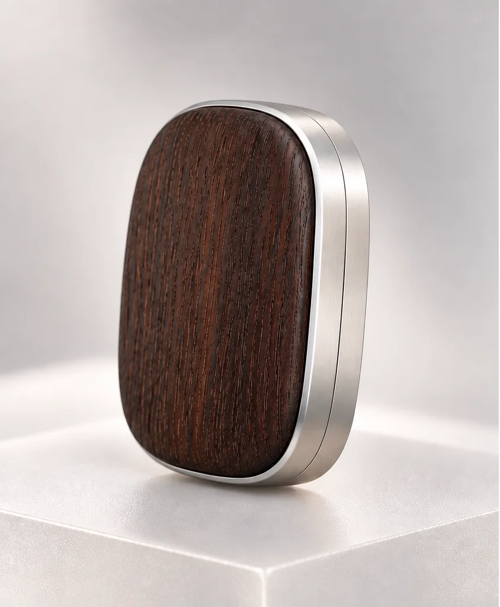
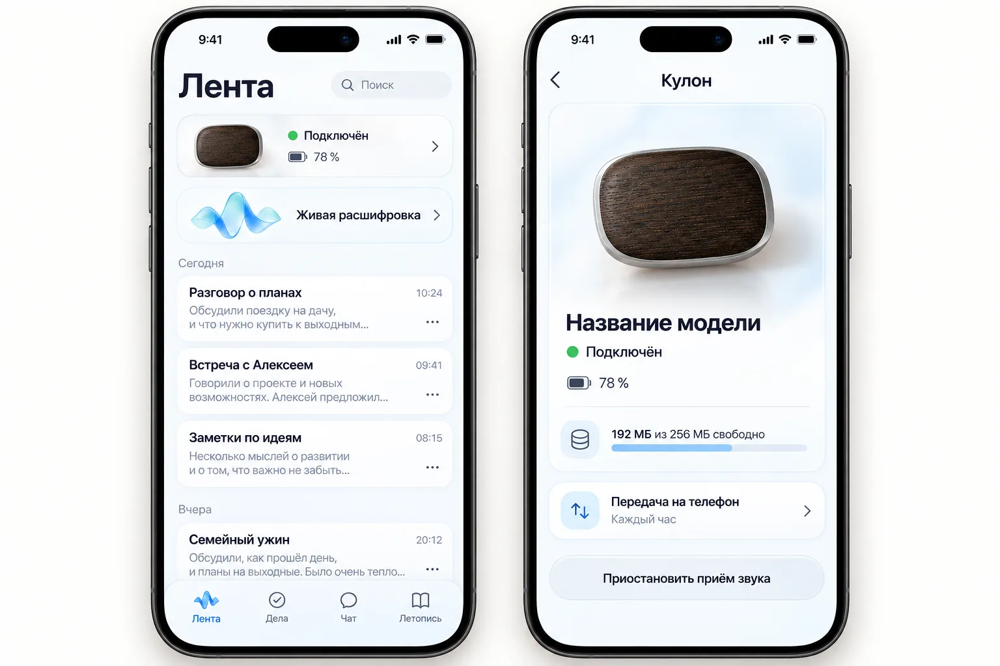
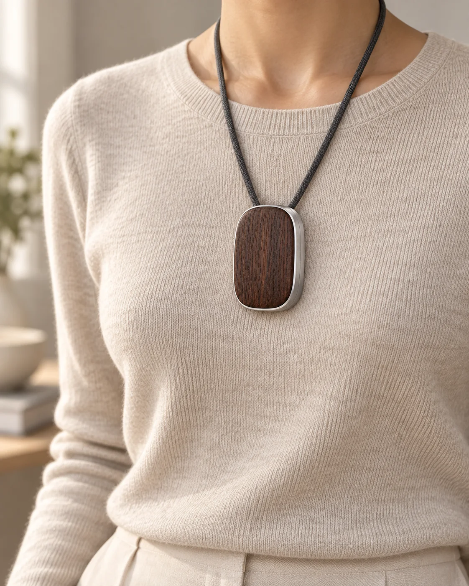
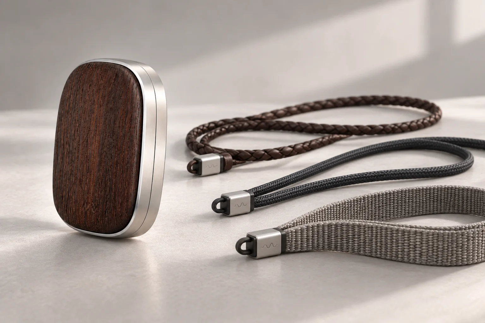
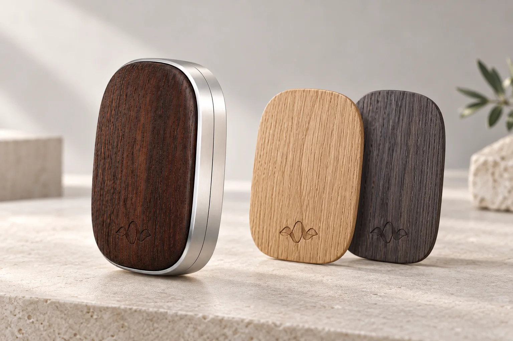

Слышит обязательства
Выделяет суммы, сроки, решения, обещания и риски — то, что обычно теряется между фразами.
Вторая память
Сохраняет смысл разговоров, замечает обязательства и возвращает нужное в правильный момент — до срока, перед встречей или когда хочется вспомнить прожитый день.

Не ещё один диктофон
Выделяет суммы, сроки, решения, обещания и риски — то, что обычно теряется между фразами.
Переговоры превращает в ясный конспект. Личное сохраняет как живую историю, а не как протокол.
Поднимает связанные разговоры и факты, чтобы совет опирался на вашу историю, а не на общий шаблон.
Один день с Помнит
Что горит по срокам, кто чего ждёт, какие деньги в движении и на чём сегодня важно сосредоточиться.
Кто был, что решили, кто кому что пообещал — готовая структура вместо полотна расшифровки.
История отношений, незакрытые договорённости и точные цитаты возвращаются перед следующей встречей.
Не сухой отчёт, а глава личной летописи: события, мысли, тёплые моменты и живые фразы.
Для кого
Руководители, предприниматели, продюсеры, врачи, консультанты — все, кому важно держать контекст и не терять обещания. И для каждого, кто не хочет, чтобы собственная жизнь пролетала бесследно.
Я обещал ему скидку или нет?
Помнит найдёт точную фразу из разговора и покажет дату — вместо «кажется» и долгого поиска по заметкам.
Просто снаружи, умно внутри
Телефон или кулон сохраняет разговор.
Речь превращается в текст и смысловые блоки.
Люди, дела, решения и факты получают свои места.
Только нужный контекст приходит в нужный момент.
Для каждого ответа выбираются только нужные фрагменты контекста — весь архив памяти не передаётся модели целиком.
Приложение
Структурированные резюме разговоров без сплошного текста.
Обязательства, сроки и совет по следующему шагу с опорой на контекст.
Вопросы к собственной памяти обычным человеческим языком.

Кулон
Когда доставать телефон неудобно, носимый диктофон сохраняет день сам. Дерево делает его личной вещью, матовый алюминий — точным инструментом.
Кулон дополняет приложение: телефон удобно включать на встречах, а носимое устройство помогает сохранять разговоры в течение дня, не отвлекаясь на экран.
Образ продукта
Кулон можно носить по-разному и со временем менять его характер — ремешком, породой дерева или собственной гравировкой.



Материалы, ремешки и крышки можно подобрать под владельца — чтобы устройство ощущалось личной вещью, а не одинаковой электроникой для всех.
Персонализация
Строгие мемуары, ироничная проза или собственная стилистика — прожитый день звучит по-вашему.
Данные можно передавать в реальном времени, по расписанию или вручную, чтобы беречь заряд телефона.
Бренд, модель кулона и слово активации независимы: пользователь сам выбирает, как обращаться к своему помощнику.
Управление сроком хранения, профилями людей и тем, какие категории контекста система использует.
Главный принцип
Без лишнего шума. В ответ попадает только контекст, который относится к текущему вопросу.
Без выдуманных фактов. Важные выводы можно проверить по исходному разговору и дате.
Под вашим контролем. Пользователь управляет хранением, передачей и глубиной личной памяти.
Помнит